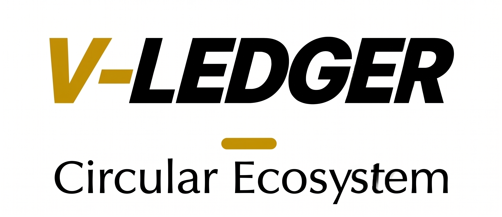

V-Ledger
The EU-Compliant Digital Product Passport (DPP) Infrastructure
Arndt Christoph Handschuh
Entwickler & Gründer V-Ledger
📞 015258986715 | 🌐 v-ledger.com | 📧 info@v-ledger.com
Confidentiality Notice: This document contains proprietary information. All rights reserved.
🔴 01: The Problem
The Challenges of the Modern Product Lifecycle
[!WARNING]
Traditional methods of product tracking are no longer sufficient to meet modern security and regulatory standards.
1. Regulatory Pressure (EU ESPR)
Upcoming EU Ecodesign for Sustainable Products Regulation (ESPR) mandates a Digital Product Passport for most physical goods by 2026/2027. Non-compliance risks heavy fines and market access restrictions.
2. The Counterfeit Epidemic
Global trade in counterfeits costs brands billions annually. Traditional QR codes or basic NFC tags are easily cloned, leading to trust erosion and safety risks.
3. Fragmented Lifecycle Data
Once a product is sold, brands lose visibility. Recycling rates remain low because there is no standardized way to verify material composition or incentivize returns.
Die Herausforderungen des modernen Produktlebenszyklus (DE)
Globale Marken stehen unter zunehmendem Druck von Regulatoren, Konsumenten und Umweltgruppen, Transparenz über ihre Lieferketten zu schaffen.
1. Regulatorischer Druck: EU-Ecodesign-Verordnung (ESPR) bis 2026/2027.
2. Fälschungsepidemie: QR-Codes sind leicht zu klonen.
3. Fragmentierte Daten: Fehlende Sichtbarkeit nach dem Verkauf.
🟢 02: The Solution
V-Ledger: A Trust-as-a-Service Infrastructure
V-Ledger provides an end-to-end framework for creating, managing, and verifying Digital Product Passports (DPP) with unmatched security and ease of use.
|
|
🛡️ 1. Secure Digital Identity
Every physical product is assigned a unique, non-clonable digital twin on the blockchain (Base L2), secured by an NTAG 424 DNA NFC chip.
📜 2. Automated Compliance
The V-Ledger protocol automatically generates EU-compliant DPPs, ensuring that all required regulatory data is immutably recorded.
♻️ 3. Incentivized Circularity
By integrating a "Pfand" (Deposit) system, V-Ledger creates a financial incentive for customers to return or recycle products.
⚡ 4. Frictionless Interaction
Built with Account Abstraction (ERC-4337), allowing brands and consumers to interact with the blockchain effortlessly.
V-Ledger: Trust-as-a-Service Infrastruktur (DE)
V-Ledger bietet ein End-to-End-Framework für digitale Produktpässe (DPP). Eindeutige digitale Zwillinge auf der Blockchain (Base L2), gesichert durch NTAG 424 DNA. Account Abstraction sorgt für ein Web2-ähnliches Erlebnis ohne Krypto-Hürden.
⚙️ 03: Technology Stack
💎 Core Components
- Hardware: NTAG 424 DNA (NFC)
- Anti-cloning: SUN tokens provide unique cryptographic proofs.
- Security: Hardened physical security.
- Blockchain: Base (Ethereum L2)
- Scalability: Enterprise-grade performance.
- Security: Inherited from Ethereum.
- Abstraction: ERC-4337
- Invisible Wallets: Social login; no seed phrases.
- Gasless UX: Platform sponsors fees.
|
🏗️ System Architecture

|
Technik-Details (DE)
V-Ledger basiert auf einer "Web2.5"-Architektur. NTAG 424 DNA bietet Schutz vor Klonen, während Base (L2) für Skalierbarkeit sorgt. ERC-4337 ermöglicht unsichtbare Wallets und gaslose Transaktionen für maximale Usability.
✨ 04: Unique Value Propositions
Why Choose V-Ledger?
[!TIP]
Our focus is on making the technology "invisible" to the end-user while providing maximum security for the brand.
🌟 1. No-Crypto Onboarding (Invisible Web3)
Logins via social accounts and gasless transactions mean zero learning curve for brands and customers.
🔒 2. Anti-Counterfeit Hardware Lock
NTAG 424 DNA ensures that the digital passport cannot be decoupled from the physical product or copied.
🕵️ 3. Privacy by Design
Sensitive supply chain data is encrypted (AES-256) before being uploaded to IPFS. Only authorized holders can decrypt product details.
💰 4. Lifecycle Monetization
Automated secondary market royalties and incentivized recycling create a perpetual revenue stream.
Alleinstellungsmerkmale (DE)
V-Ledger bietet Onboarding ohne Krypto-Hürden, echtes Anti-Counterfeit durch Hardware-Bindung und datenschutzkonforme Speicherung (AES-256). Durch automatisierte Royalties verdienen Marken an jedem Wiederverkauf mit.
🌐 05: The Product Ecosystem
🏢 1. Brand Console
Manufacturing Control: Mint new DPPs at scale and track supply chain analytics in real-time.
🏪 2. Merchant Interface
Activation & Verification: Instantly verify authenticity using any mobile device—no special hardware required.
📱 3. Customer Passport Portal
Engagement: Access origin stories, claim ownership, and interact with Circular Rewards (Pfand).
🛡️ 4. Compliance & Authority Gateway
JSON-LD Export: Standards-compliant data output for seamless integration with EU surveillance systems and Customs (Zoll).
Ökosystem-Schnittstellen (DE)
V-Ledger verbindet alle Stakeholder: Vom Marken-Dashboard über das Händler-Portal bis zum Kunden-Passport. Die JSON-LD Schnittstelle sorgt dabei für volle Kompatibilität mit Behörden und dem EU-Zoll.
♻️ 06: Economy & Incentives
Dual-Incentive Infrastructure
📈 1. The Pfand (Deposit) System

💎 2. Secondary Market Royalties
V-Ledger allows brands to capture a percentage of every resale. When ownership is transferred, the smart contract automatically routes a Royalty Fee back to the brand.

Wirtschaftliche Anreize (DE)
Pfandsystem: Sicherstellung der Materialrückführung durch On-Chain hinterlegte Deposits.
Royalties: Automatische Umsatzbeteiligung der Marke bei jedem Wiederverkauf (z. B. Luxusuhren), was dauerhafte Einnahmen über den gesamten Lebenszyklus generiert.
💰 07: Business Model
💳 Subscription Tiers
| Tier |
Target |
Key Features |
Price |
| Starter |
Testing/Prototypes |
25 free mints/month, Basic GS1 Resolver access |
€0 /mo |
| Essential |
Emerging brands |
500 digital twins included, Standard Support |
€49 /mo + €0.05 per mint |
| Pro |
SMB Scale-Up |
Prioritized SLA, Batch mint API, Event tracking |
€199 /mo + €0.02 per mint |
| Enterprise |
Global manufacturing |
Dedicated manager, Custom gas networks, On-premises |
Custom |
📈 Revenue Components
- SaaS Subscription: Fixed monthly platform access fee.
- Minting Fee: One-time usage fee per Passport created.
- Royalty Commission: Percentage-based fee on secondary market transactions.
- Transaction Fee: Small percentage on circular economy (Pfand) payouts.
Geschäftsmodell (DE)
Skalierbare Erlösströme durch monatliche Abonnements und nutzungsbasierte Gebühren (Minting & Transaktionen). Jede Pfandrückzahlung und jeder Wiederverkauf steigert den Lifetime Value des Produkts.
📊 08: Competition & Market
The Market Demand
The DPP market is projected to reach billions in value as the EU ESPR regulation affects over 30 product categories by 2026.
📈 Market Drivers
- Regulatory Deadline: 2026/2027 mandates forced adoption.
- Consumer Shift: 70%+ prioritize verifiable sustainability.
- Brand Protection: Global counterfeit growth.
|

|
⚔️ Competitive Positioning
| Feature |
QR / Basic NFC |
Legacy Traceability |
V-Ledger |
| Security |
🔴 Low |
🟡 Medium |
🟢 High (SUN) |
| Trust |
🔴 Low |
🟡 Medium |
🟢 High (Web3) |
| User Exp. |
🟢 High |
🔴 Low |
🟢 High (Invisible) |
Marktanalyse (DE)
Der EU-ESPR-Standard erzwingt die Einführung digitaler Pässe. V-Ledger hebt sich durch echte Hardware-Sicherheit und die "Invisible Web3"-Erfahrung von herkömmlichen QR-Godes ab.
🚀 09: Roadmap & Journey

🎯 Key Breakthroughs
- The "Missing Link": V-Ledger software was ready by late 2025, but hardware encryption (NTAG 424 DNA) was the final hurdle.
- Hardware Mastery (April 2026): Implemented CMAC/SDM/SUN encryption via Kotlin and the ocpp-toolbox.
Werdegang & Roadmap (DE)
Vom Konzept 2024 über das technische Fundament 2025 bis zum Hardware-Durchbruch im April 2026: V-Ledger ist nun bereit für die EU-Regulierung 2026/2027 und bietet die notwendige Sicherheit auf Hardware-Ebene.
Created by Arndt Christoph Handschuh | v-ledger.com